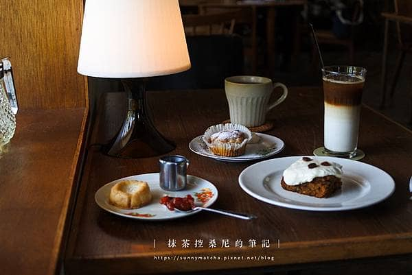

猻物咖啡
大膽地探索咖啡滋味。
在不同的季節更會推出不同的水果自製咖啡特調。
「檸檬美式」的黃檸檬也是來自內埔果農所種植的，
輕盈的檸檬果香很適合炎熱的南部天氣。

海珈琲 海とコーヒー
以認真的態度接待每一位來訪的人。
Jude說道：「取名為海珈琲的原因為自己喜歡海，海讓我感受到平靜。」
期望來訪的人能有一個安靜休憩的地方，彷彿在海裡悠遊的感覺，
不受外在紛擾，擁有片刻屬於自己舒適的空間。
龜時間 goöod time
能夠直接聽在地人說故事，對當地生活的樣貌有更立體的認識。
| 圖片 | 標題 | 說明 |
|---|---|---|
|
猻物咖啡 |
用獨特的烘豆思維與調味實驗，融合屏東當地食材、文化與風土， 大膽地探索咖啡滋味。 在不同的季節更會推出不同的水果自製咖啡特調。 「檸檬美式」的黃檸檬也是來自內埔果農所種植的， 輕盈的檸檬果香很適合炎熱的南部天氣。 |
|
海珈琲 海とコーヒー |
海珈琲保存許多以前遺留的事物，製作的餐點亦維持最單純的樣貌， 以認真的態度接待每一位來訪的人。 Jude說道：「取名為海珈琲的原因為自己喜歡海，海讓我感受到平靜。」 期望來訪的人能有一個安靜休憩的地方，彷彿在海裡悠遊的感覺， 不受外在紛擾，擁有片刻屬於自己舒適的空間。 |
|  | 龜時間 goöod time |
「千年龜，萬年鶴」是古時候流傳的吉祥象徵，意謂著長壽平安。 能夠直接聽在地人說故事，對當地生活的樣貌有更立體的認識。 |